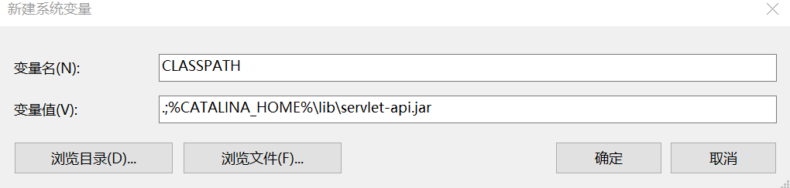
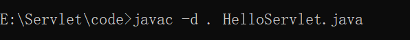
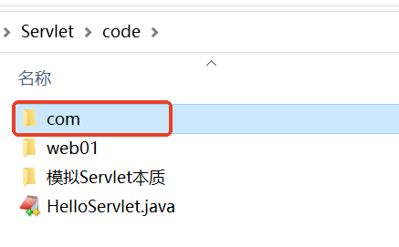
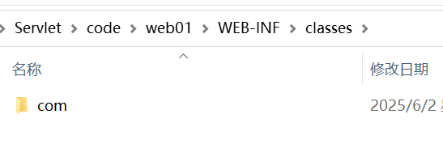
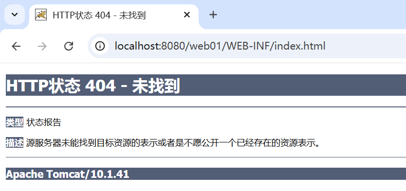

本章按照网课为基础，按照本地环境和目录进行调整
> pwd
D:\project\work\learn-servlet\webapps\hello
> tree
D:.
└───WEB-INF
├───classes
│ └───com
│ └───jkweilai
│ └───servlet
└───src
└───com
└───jkweilai
└───servlet
在hello\WEB-INF\src\com\jkweilai\servlet创建 HelloServlet.java。
任何 Servlet都必须实现 jakarta.servlet.Servlet接口，该接口中有哪些方法呢？看源码：
package jakarta.servlet;
import java.io.IOException;
public interface Servlet {
void init(ServletConfig var1) throws ServletException;
ServletConfig getServletConfig();
void service(ServletRequest var1, ServletResponse var2) throws ServletException, IOException;
String getServletInfo();
void destroy();
}
编写 HelloServlet实现该接口中所有方法：
package com.jkweilai.servlet;
import jakarta.servlet.Servlet;
import jakarta.servlet.ServletException;
import jakarta.servlet.ServletRequest;
import jakarta.servlet.ServletResponse;
import jakarta.servlet.ServletConfig;
import java.io.PrintWriter;
import java.io.IOException;
public class LoginServlet1 implements Servlet{
public void init(ServletConfig config) throws ServletException{}
// servlet的核心方法，每一次请求都会调用这个方法
public void service(ServletRequest request,ServletResponse response) throws ServletException, IOException{
// 向控制台打印
System.out.println("Hello Servlet!");
// 解决中文乱码需要设置响应头，在获取响应流之前才有效
response.setContentType("text/html;charset=UTF-8");
// 向浏览器上响应HTML：响应对象 response
PrintWriter out = response.getWriter();
out.print("<h1>Hello Servlet 01!</h1>");
out.println("<h1>你好！！！</h1>");
}
public void destroy(){}
public String getServletInfo(){
return "";
}
public ServletConfig getServletConfig(){
return null;
}
}
但其实ai给了我一个更简洁的，也就是用httpservlet而不是单纯的servlet：
package com.jkweilai.servlet;
import jakarta.servlet.ServletException;
import jakarta.servlet.http.HttpServlet;
import jakarta.servlet.http.HttpServletRequest;
import jakarta.servlet.http.HttpServletResponse;
import java.io.IOException;
import java.io.PrintWriter;
public class LoginServlet2 extends HttpServlet {
@Override
protected void doGet(HttpServletRequest req, HttpServletResponse resp)
throws ServletException, IOException {
resp.setContentType("text/html;charset=UTF-8");
PrintWriter out = resp.getWriter();
out.println("<html><body>");
out.println("<h1>Hello, Servlet 02!</h1>");
out.println("</body></html>");
}
@Override
protected void doPost(HttpServletRequest req, HttpServletResponse resp)
throws ServletException, IOException {
doGet(req, resp);
}
}
response.setContentType("text/html");
response.setCharacterEncoding("UTF-8");
可以合并为一行：
response.setContentType("text/html;charset=UTF-8");
**注意：这行代码必须出现在 PrintWriter out = response.getWriter();之前才能解决乱码问题。
response.setCharacterEncoding("UTF-8");和 HTML 中的<meta charset="UTF-8">有什么区别？
PrintWriter如何将Java字符串转换为字节序列，是服务器端的行为，发生在内容发送到客户端之前，会自动设置Content-Type响应头的charset部分，例如：Content-Type: text/html;charset=UTF-8这是最根本的编码设置，决定了数据在传输时的实际编码。如果用本地的java编译，需要配置环境变量 CLASSPATH：

思考，为什么要配置 CLASSPATH 环境变量，另外环境变量中为什么要添加一个 .
编译：

以上编译命令表示：编译当前目录下的 HelloServlet.java文件，将编译之后的程序放到当前目录下。
编译之后生成了：

编译后拷贝到 classes 目录
将以上编译之后的结果拷贝到 WEB-INF/classes目录下：

我的方法：编译器就在我的docker里面，直接用下面的命令运行更好！不用手动拷贝了
docker exec my-tomcat bash -c "mkdir -p /usr/local/tomcat/webapps/hello/WEB-INF/classes && javac -encoding UTF-8 -cp /usr/local/tomcat/lib/servlet-api.jar -d /usr/local/tomcat/webapps/hello/WEB-INF/classes /usr/local/tomcat/webapps/hello/WEB-INF/src/com/jkweilai/servlet/LoginServlet1.java"
docker exec my-tomcat bash -c "mkdir -p /usr/local/tomcat/webapps/hello/WEB-INF/classes && javac -encoding UTF-8 -cp /usr/local/tomcat/lib/servlet-api.jar -d /usr/local/tomcat/webapps/hello/WEB-INF/classes /usr/local/tomcat/webapps/hello/WEB-INF/src/com/jkweilai/servlet/LoginServlet2.java"
# 最后重启一下
docker-compose restart
这样也不需要复制了，多好。
Tomcat 服务器 webapps 目录下自带了几个项目，这些项目当中都有 web.xml，可以从这里拷贝样例文件。
在 web01\WEB-INF\目录下新建 web.xml文件，进行以下的配置：
<?xml version="1.0" encoding="UTF-8"?>
<web-app xmlns="https://jakarta.ee/xml/ns/jakartaee"
xmlns:xsi="http://www.w3.org/2001/XMLSchema-instance"
xsi:schemaLocation="https://jakarta.ee/xml/ns/jakartaee
https://jakarta.ee/xml/ns/jakartaee/web-app_6_0.xsd"
version="6.0">
<!--servlet配置信息-->
<servlet>
<!--servlet的名字随便写一个，但是要保证和servlet mapping中的servlet名字一致。-->
<servlet-name>loginServlet1</servlet-name>
<!--这里必须填写Servlet类的全限定类名-->
<servlet-class>com.jkweilai.servlet.LoginServlet1</servlet-class>
</servlet>
<servlet>
<servlet-name>loginServlet2</servlet-name>
<servlet-class>com.jkweilai.servlet.LoginServlet2</servlet-class>
</servlet>
<!--servlet映射信息-->
<servlet-mapping>
<servlet-name>loginServlet1</servlet-name>
<!--请求路径必须以 / 开始，不要添加项目名。-->
<url-pattern>/login1</url-pattern>
<!--支持编写多个-->
<url-pattern>/a/b/c</url-pattern>
</servlet-mapping>
<servlet-mapping>
<servlet-name>loginServlet2</servlet-name>
<url-pattern>/login2</url-pattern>
</servlet-mapping>
</web-app>
需要引起注意：
metadata-complete="true"：容器忽略所有注解，只使用 web.xml 配置
metadata-complete="false"(默认值)：容器会扫描注解
在上面测试时，浏览器地址栏上直接输入的地址是：http://localhost:8080/web01/hello，也可以采用用户点击超链接的方式发送请求。在 web01目录下新建 index.html。然后编写如下代码：
<!DOCTYPE html>
<html lang="zh-CN">
<head>
<meta charset="UTF-8">
<meta name="viewport" content="width=device-width, initial-scale=1.0">
<title>首页</title>
</head>
<body>
<a href="http://localhost:8080/hello/login1">登录</a>
<!--http://ip:port 可以省略。前端编写的路径目前都以 / 开头，并且一定要添加项目名。-->
<a href="/hello/login2">登录</a>
</body>
</html>
将 index.html文件部署到 Tomcat 服务器的 hello 项目下：
再次启动服务器测试
启动 Tomcat 服务器，然后打开浏览器在地址栏上输入：http://localhost:8080/web01/index.html
将 index.html 放到 WEB-INF 目录下测试，启动服务器，打开浏览器，输入地址：http://localhost:8080/web01/WEB-INF/index.html，如下：

通过测试得知，放在 WEB-INF 目录下的资源是受保护的。